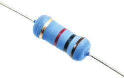
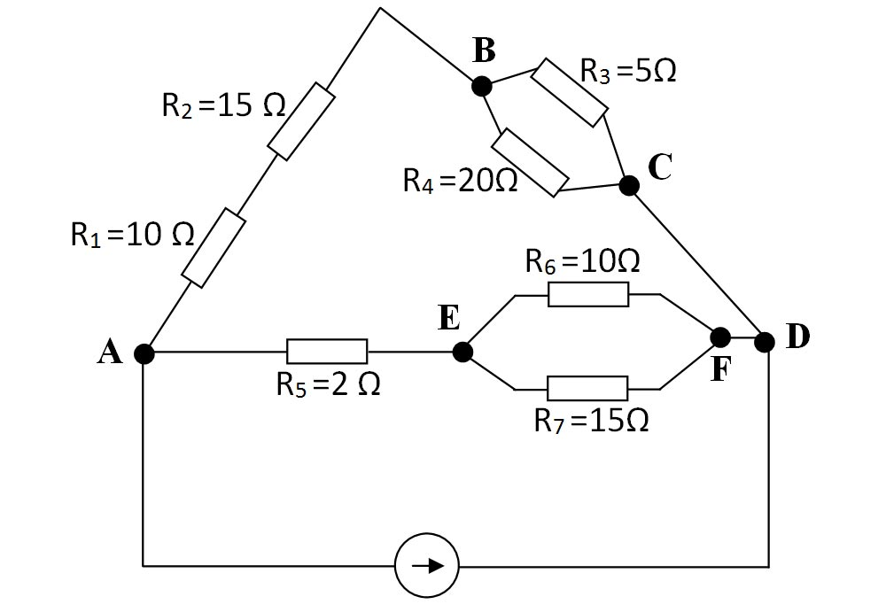

Rezistorul este o componenta electronica folosita pentru a limita curentul electric intr-un circuit.
Valoarea rezistentei se masoara in ohmi (Ω). Simbolul folosit pentru rezistenta este R.

Rezistorul controleaza trecerea curentului electric si poate proteja alte componente electronice. Este o componenta pasiva foarte importanta.
Un rezistor are mai multe caracteristici importante. Acestea determina modul in care functioneaza intr-un circuit.
O caracteristica importanta este puterea, care se masoara in wati (W). Toleranta reprezinta abaterea admisa fata de valoarea nominala.

Rezistoarele sunt utilizate in foarte multe aparate electronice, precum televizoare, calculatoare si telefoane.
Rezistorul este o componenta esentiala pentru functionarea corecta a circuitelor. Acesta ajuta la controlul curentului si al tensiunii.
Poti afla mai multe despre rezistoare accesand urmatoarele site-uri:
Wikipedia - Rezistor| Caracteristica | Informatii |
|---|---|
| Denumire | Rezistor |
| Simbol | R |
| Unitate de masura | Ohm (Ω) |
| Putere | Watt (W) |
| Rol | Limitarea curentului electric |
Rezistoarele sunt folosite in numeroase domenii:
Rezistorul este important pentru protectia componentelor electronice.
Rezistoarele pot functiona in diferite conditii.
Totusi, trebuie alese in functie de circuit.
1. Rezistenta electrica se masoara in ohmi (Ω).
2. Unele rezistoare au benzi colorate care indica valoarea rezistentei.
Pentru mai multe informatii, imi poti trimite un e-mail:
Trimite un e-mailAcest proiect a fost realizat de Alexandru, elev la profil tehnic, in scop educational. Proiectul prezinta caracteristicile, rolul si utilizarile rezistorului in circuitele electronice.